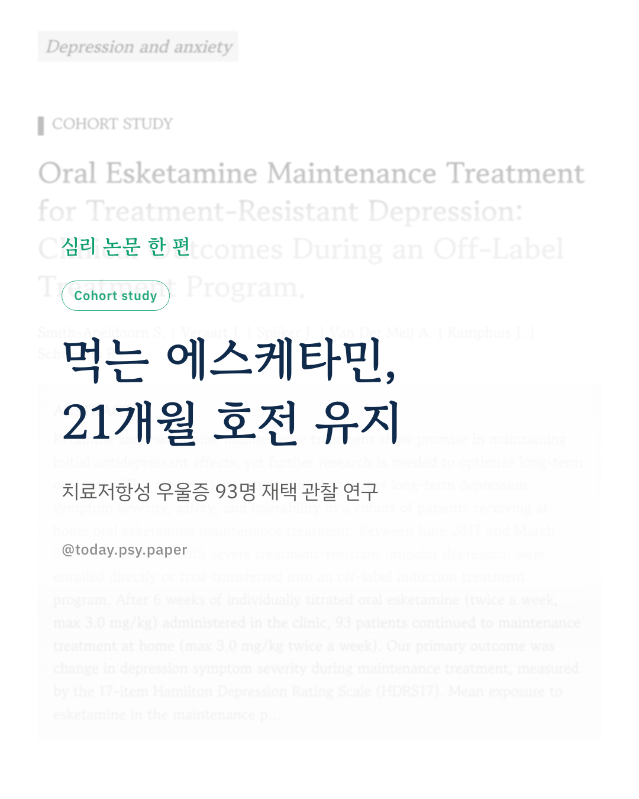
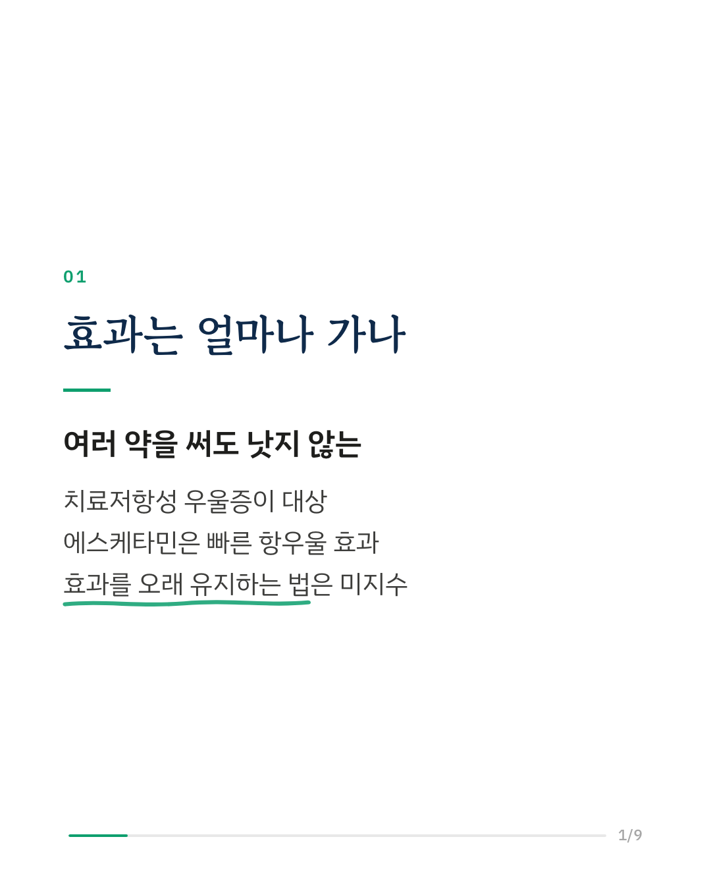
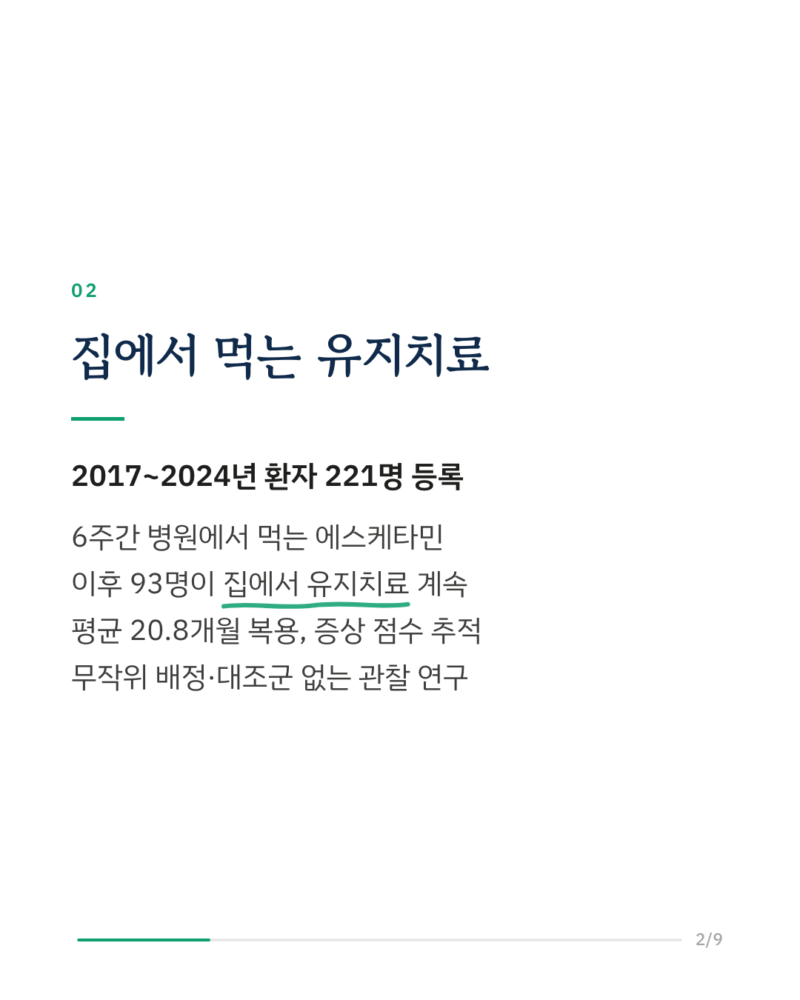
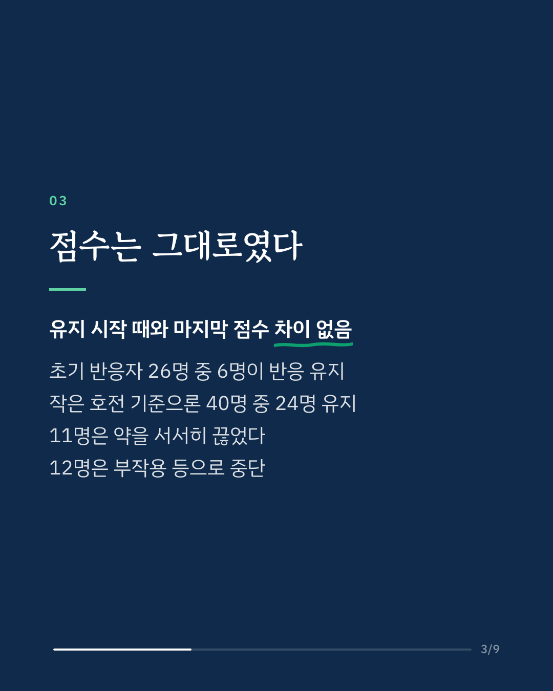
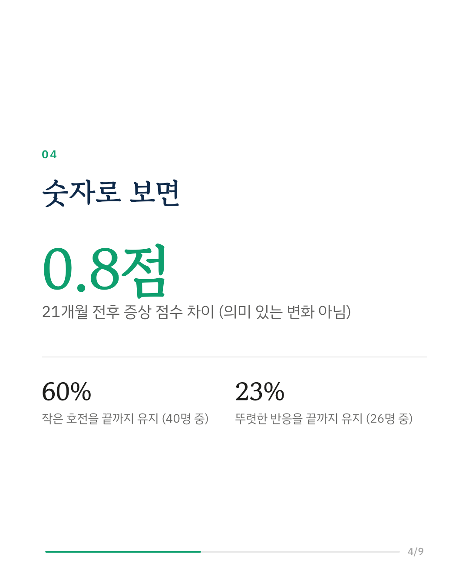
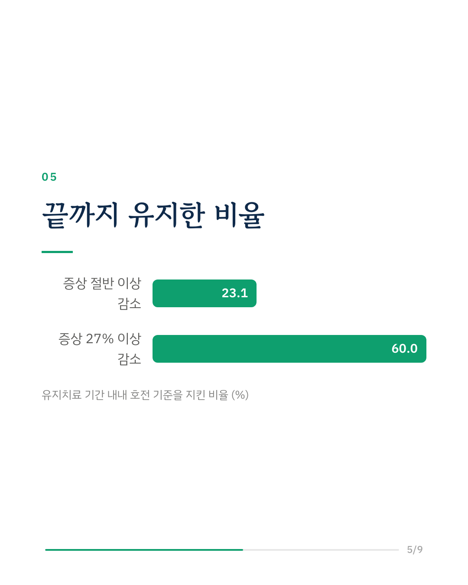
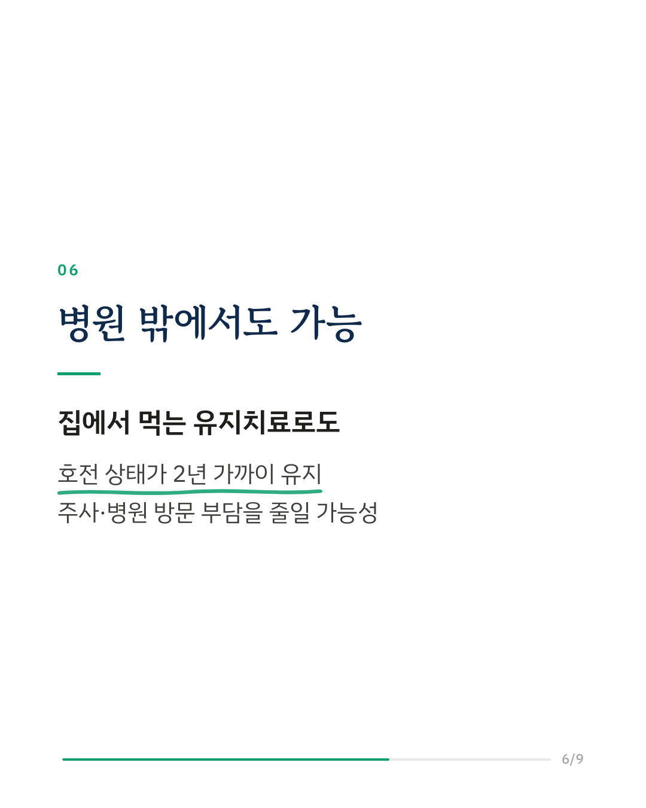
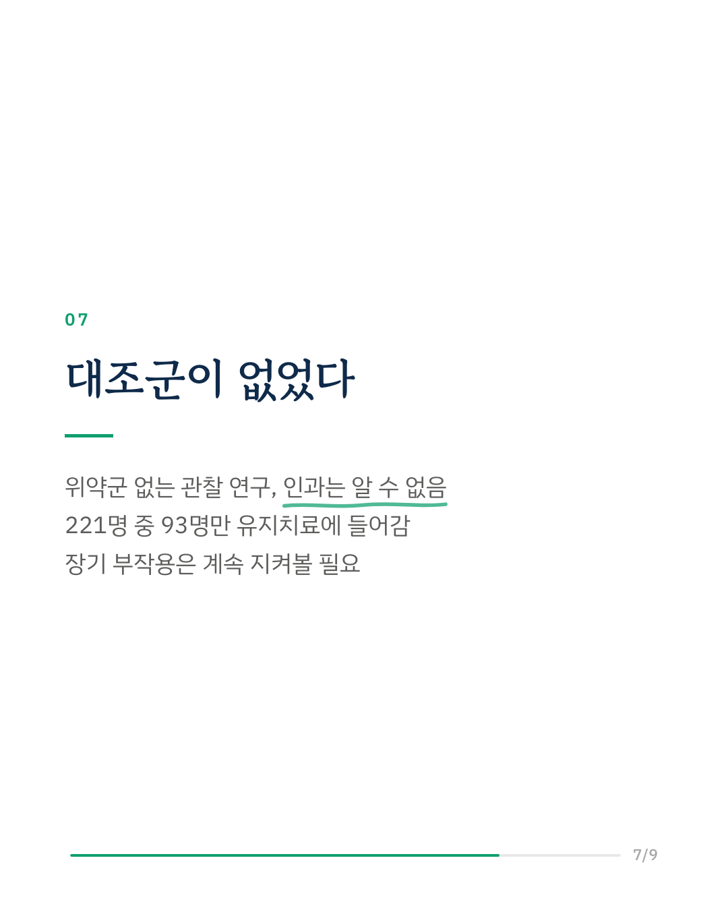
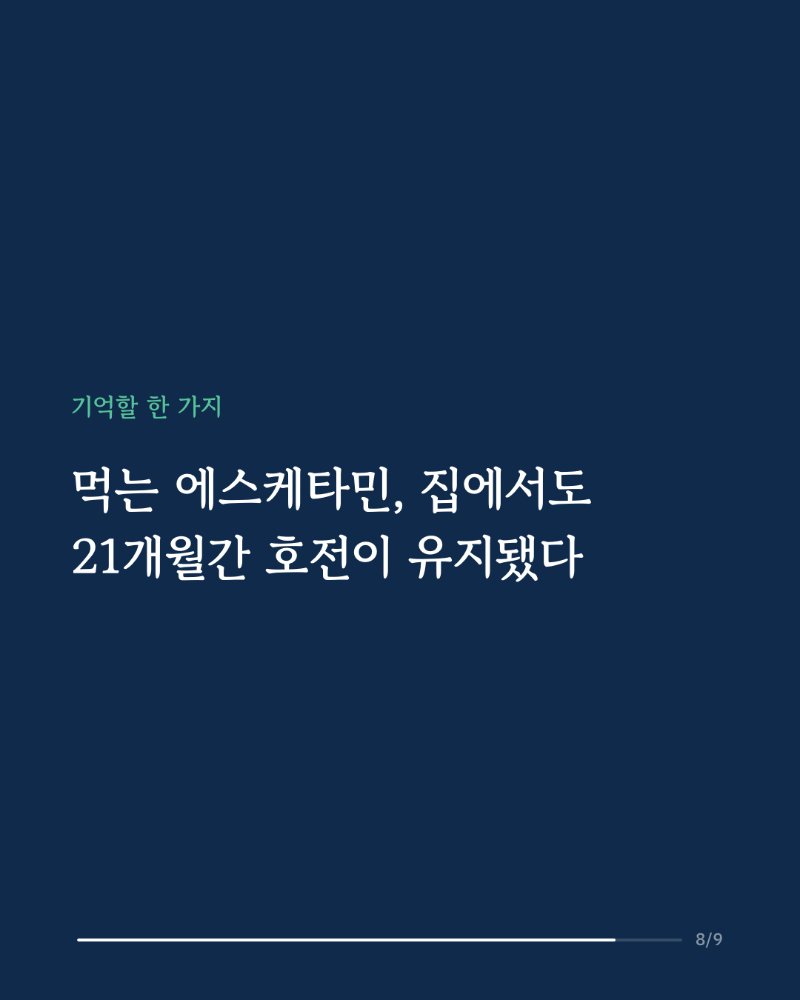
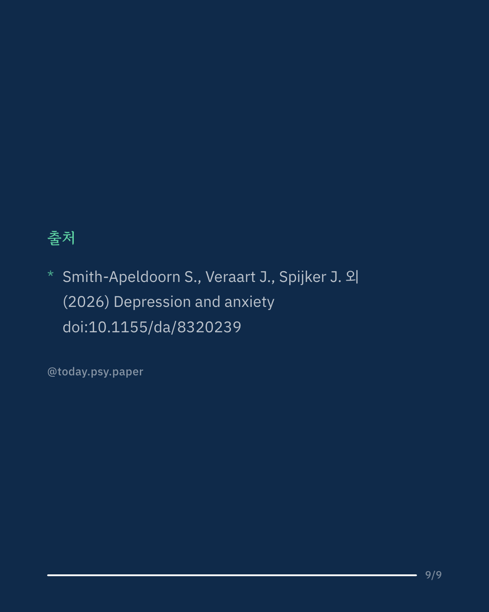

여러 항우울제를 써도 나아지지 않는 치료저항성 우울증에 케타민과 에스케타민이 빠른 효과를 보인다는 보고가 이어지고 있습니다. 문제는 그 효과를 얼마나 오래 유지할 수 있는가였습니다. 연구팀은 2017년부터 2024년까지 중증 치료저항성 우울증 환자 221명을 먹는 에스케타민 프로그램에 등록했습니다. 6주간 병원에서 개인별로 용량을 맞춘 뒤, 93명이 집에서 주 2회 복용하는 유지치료로 넘어갔고 평균 20.8개월을 추적했습니다. 유지치료를 시작할 때와 마지막 측정 때의 우울 증상 점수(해밀턴 척도)는 통계적으로 차이가 없었습니다. 호전된 상태가 그대로 유지된 셈입니다. 다만 초기에 증상이 절반 이상 줄어든 26명 중 반응을 끝까지 유지한 사람은 23%였고, 작은 호전(27% 이상 감소) 기준으로는 40명 중 60%가 유지했습니다. 11명은 약을 서서히 끊었고, 12명은 부작용이 한 이유가 되어 치료를 중단했습니다. 연구팀은 집에서 먹는 에스케타민 유지치료가 중증 치료저항성 우울증의 증상 안정과 관련이 있을 수 있다고 봤습니다. 전반적으로 안전하고 견딜 만했지만, 일부 장기 부작용은 계속 관찰이 필요하다고 덧붙였습니다. 위약군이 없는 관찰 연구여서 효과가 약 때문인지는 이 연구로 알 수 없고, 등록한 221명 가운데 유지 단계까지 간 사람이 93명이라는 사실도 함께 봐야 합니다. Depression and Anxiety (2026), 'Oral Esketamine Maintenance Treatment for Treatment-Resistant Depression: Clinical Outcomes During an Off-Label Treatment Program' DOI: 10.1155/da/8320239 #임상심리 #정신건강정보 #심리학연구 #논문리뷰 #치료저항성우울증 #에스케타민 #케타민치료 #정신약물
python3 publish.py 42964271